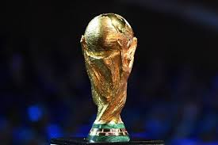
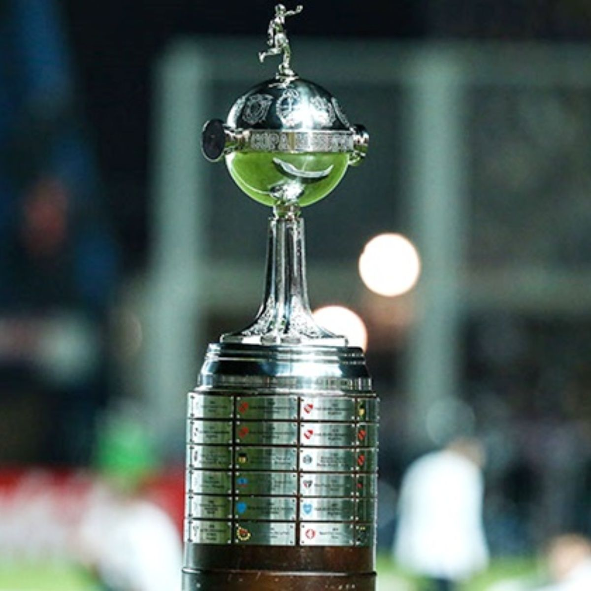
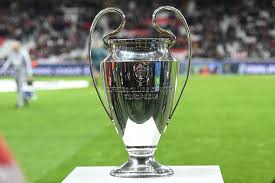
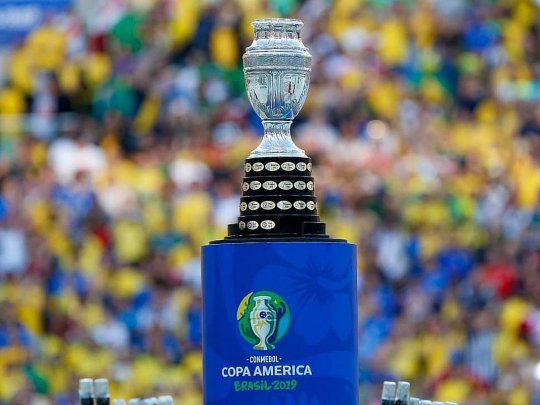
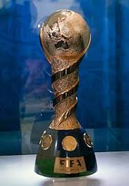
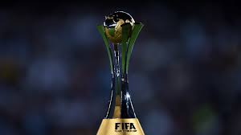

Últ. actualización:08 de octubre de 2020
Top competiciones más grandes

Copa del mundo FIFA
La copa del mundo, o copa FIFA es el torneo en el que juegan las mejores 32 selecciones de países en el mundo, y solo una termina llevándose la ansiada copa, este torneo comenzó a jugarse a partir de 1930, desde ahí tiene como máximo ganador a la selección de Brasil con 5 veces ganadores.

Copa bridgestone libertadores
La copa libertadores es la copa más importante de sudámerica, esta copa la juegan los mejores 48 equipos de sudámerica, empezó en 1960.

Champions League
La champions league, es la copa más importante de Europa, lo juegan los mejores jugadores del mundo divididos en 32 equipos europeos, organizado por la UEFA, desde 1955 hasta ahora el Real Madrid ha sido el máximo exponente de este torneo.

Copa Ámerica
La Copa América es el torneo internacional de selecciones nacionales masculinas de fútbol continental más importante de Sudamérica. Además de las diez selecciones que conforman la Confederación Sudamericana de Fútbol (Conmebol), suelen participar dos equipos invitados. La selección campeona vigente es Chile

Copa Confederaciones
La Copa FIFA Confederaciones es un torneo internacional de fútbol organizado por la FIFA, en el que participan ocho equipos que representan a las seis confederaciones que componen el máximo organismo del fútbol mundial y, como complemento, el campeón del mundo y el país anfitrión. Es considerado el torneo más importante organizado por la FIFA después de la Copa Mundial de Fútbol.

Mundial de clubes
El mundial de clubes es lo más grande a nivel de equipos, ya que junta a los campeones de los 6 continentes para escoger al mejor equipo del mundo, el campeón vigente es Bayern Munich